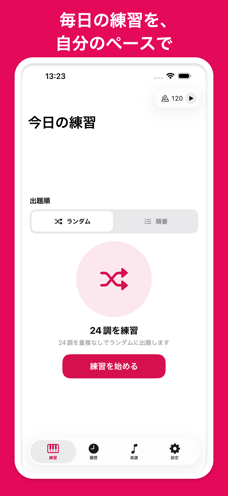
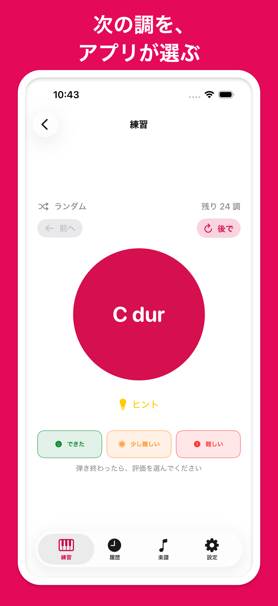
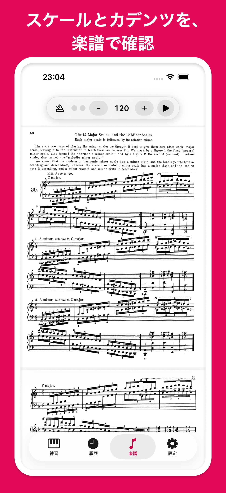
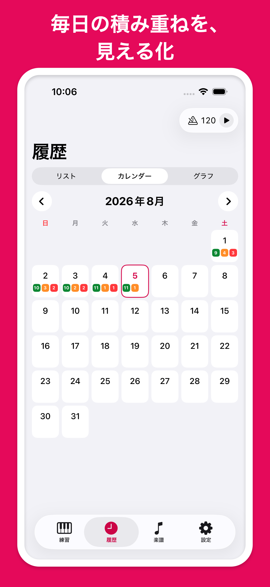
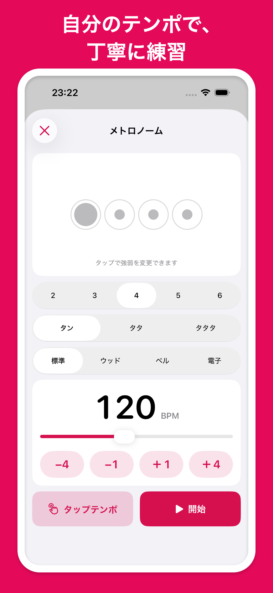

次の調を、
アプリが選ぶ
24調を重複なしでランダムに出題。ハノンの楽譜順でも、迷わず練習を始められます。

調号と楽譜を確認
調号のヒントとハノン第39番の楽譜を、その場で確認。スケールとカデンツを丁寧に練習できます。

積み重ねを、
見える形に
練習後の評価を保存し、リスト・カレンダー・グラフで振り返れます。苦手な調もひと目で確認できます。

自分のテンポで練習
テンポ・拍子・アクセント・音色を調整。バックグラウンド再生にも対応しています。